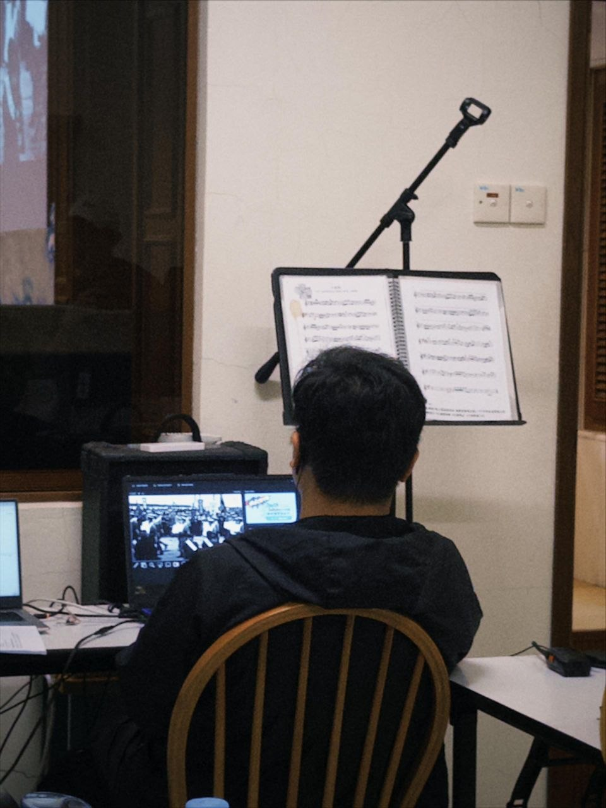

Soka Gakkai Malaysia Event Experience
Working with Soka Gakkai Malaysia (SGM) has allowed me to contribute actively to large-scale cultural, social, and community-focused events. Serving as part of the operational technical crew framework, I have developed strong, practical experience handling backstage management, coordinating media schedules, and guiding floor logistics safely under dynamic live parameters.
This regular community engagement has significantly fortified my project communication pathways, multi-disciplinary teamwork coordination, and layout troubleshooting capacity—bridging structured engineering logistics with live public production delivery.
Crew Operations & Event Highlights

Serving as an official Exhibition Guide crew member. Managing the preparation, verification, and technical distribution of audio guide hardware and team operational communication assets to streamline guest interaction workflows.

Managing real-time multimedia feeds and video playback software synchronization during live stage presentations. Tracking performance timeline logs to ensure seamless transition cues alongside production sheets.

Participating in technical reviews and project alignment sessions with the wider event management team.